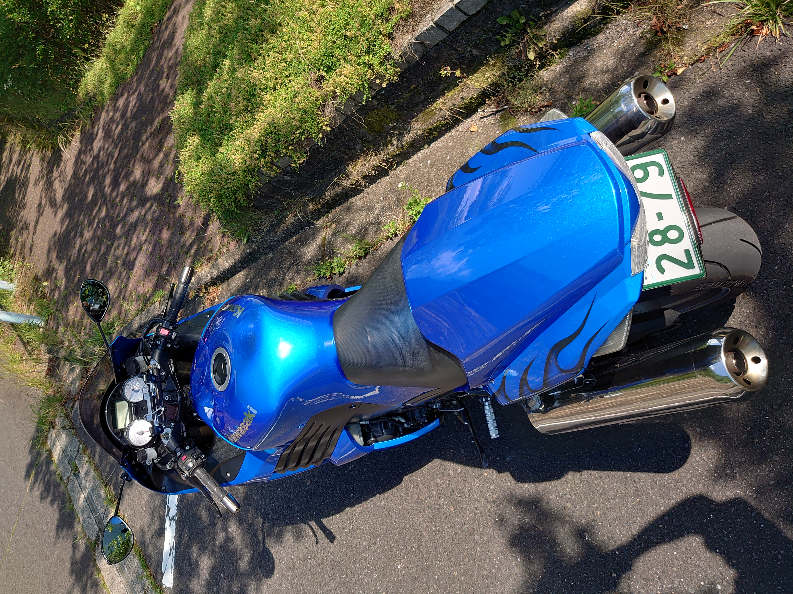

ようこそ当サイトへ!

このサイトは投稿者がバイクで走ってみておすすめだと思ったスポットを紹介するサイトです。
おすすめ度の評価方法
- 路面状況
- 行先での食事
- 景色
愛車紹介
KAWASAKI ZZR1400 / Ninja ZX-14

| メーカー | KAWASAKI |
|---|---|
| 車種 | ZZR1400 / Ninja ZX-14 |
| 排気量 | 1,352cc |
| 年式 | 2006年式 |
| カテゴリ | メガスポーツツアラー |
| 最高出力 | 190PS / 200ps(ラム圧加圧時) |
| 最高速度 | 300km/hでリミッター作動 |
| 最高回転数 | 11000rpm |
| 全長 | 2,170mm |
| 仕向け地域 | 北米/EU/マレーシア |
| 乾燥重量 | 215kg |
特徴
ZZR1400 / Ninja ZX-14は、カワサキが2006年に発表したメガスポーツツアラーであり、コンセプトは